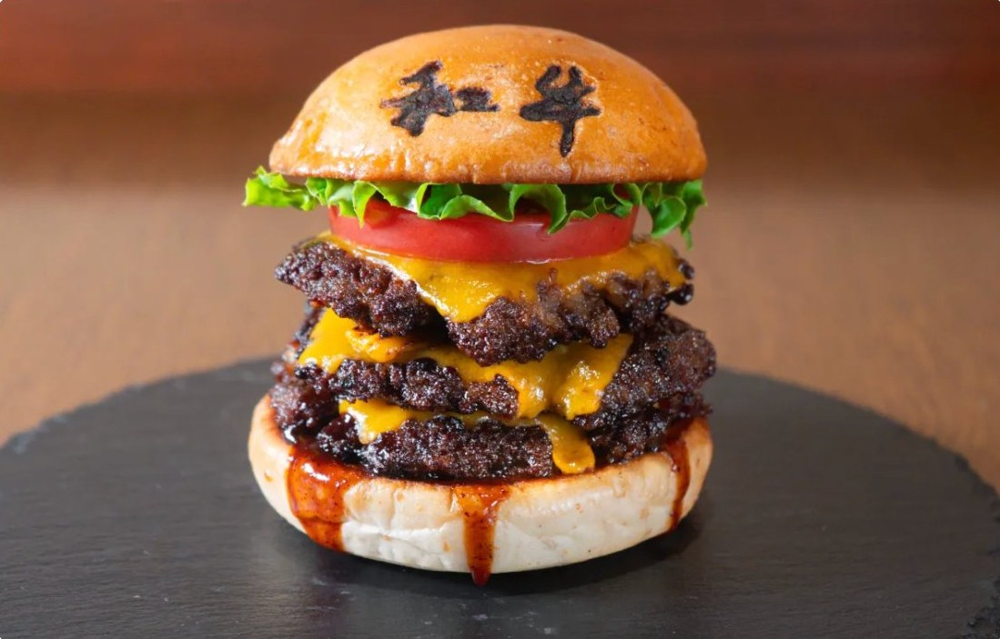
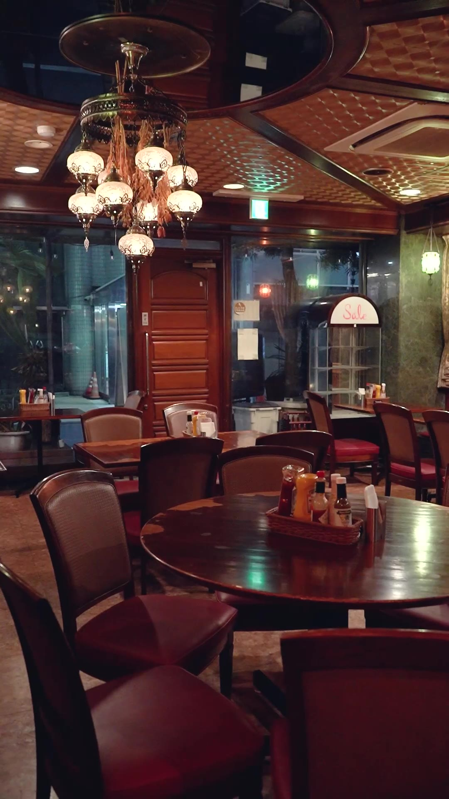
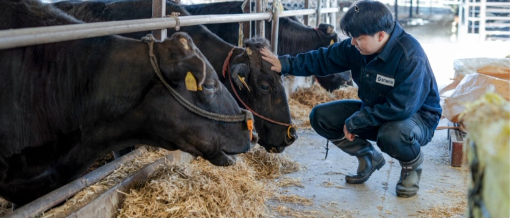

Signature
100% Wagyu Big Cheese Burger
Triple wagyu patties, generously topped with rich cheddar. Built on a brioche-style bun, finished by hand at Wagyu King Halal Tsutenkaku Restaurant.
Real Japanese Wagyu, prepared the Muslim-friendly way — burger and ramen, moments from Tsutenkaku Tower at Wagyu King Halal Tsutenkaku Restaurant.
Since 1962, weWe've raised our own cattle in Miyazaki and prepared every cut ourselves — here at Wagyu King Halal Tsutenkaku Restaurant in Osaka.
Fully vertically integrated, with no middlemen. Most "wagyu" outside Japan isn't really ours. This is.

Triple wagyu patties, brioche bun, finished by hand at Wagyu King Halal Tsutenkaku Restaurant.
A wagyu-rich broth, crowned with a large seared slice of wagyu — miso, soy, or spicy.
Best Wagyu burger I've had — anywhere. Wagyu King Halal Tsutenkaku Restaurant is unmissable in Osaka.
Finally, a Muslim-friendly place that actually feels special.
We came for Tsutenkaku, stayed for the ramen.

Raised on our own farm in Miyazaki, the heart of wagyu country.
Bloodline-managed, raised one by one — with care.
We control every step, from farm to kitchen.
The taste of wagyu, they say, is decided the moment a calf is born.
We raise our own cattle, judge the bloodlines, and prepare every cut with care. Because we control every step — from birth, to butcher, to plate — Wagyu King Halal Tsutenkaku Restaurant serves "real wagyu" with quiet confidence.
Muslim-friendly dining isn't an add-on for us — it's how we cook, every day at Wagyu King Halal Tsutenkaku Restaurant. No pork, no alcohol, anywhere in our kitchen. Welcome, whoever you are.
No alcohol, in any sauce or any glass.
Every dish on our menu is pork-free and alcohol-free.
High chairs, kids' menu, and welcoming hearts.
Since 1962, weWe've handled wagyu ourselves — from the pasture to the plate. Welcoming Muslim guests is no exception: we built our practice from the source, every step our own.
Our kitchen was designed pork-free and alcohol-free from day one. Every item on our menu is prepared the same way. Alcohol is not used, even in sauces. The wagyu we serve is processed at one of the few halal-certified slaughterhouses in Japan.
Our staff are trained to answer any question about ingredients or preparation. Whether you're dining with family, observing religious practice, or simply seeking clean and trusted food — we're here for you.
*Please note: while we use halal-certified wagyu, Wagyu King Halal Tsutenkaku Restaurant itself is not officially halal-certified. We invite you to ask any questions about our ingredients and kitchen practices.
Wagyu King Halal Tsutenkaku Restaurant
通天閣 和牛 拉面 餐厅
2-1-12 Ebisu-Nishi, Naniwa-ku
Osaka 556-0003, Japan
〒556-0003 大阪府大阪市浪速区恵美須西２丁目１−１２
Wagyu King Halal Tsutenkaku Restaurant · Shinsekai · steps from Tsutenkaku Tower
11:00 — 23:00
Open Daily
16 seats · No private rooms
Halal · 100% Japanese Wagyu
No pork · Muslim-friendly
Prepared in limited quantities daily. Our own wagyu, every step. One precious meal at Wagyu King Halal Tsutenkaku Restaurant — steps from Tsutenkaku Tower.